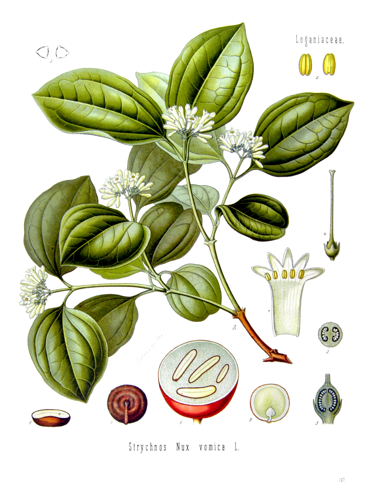
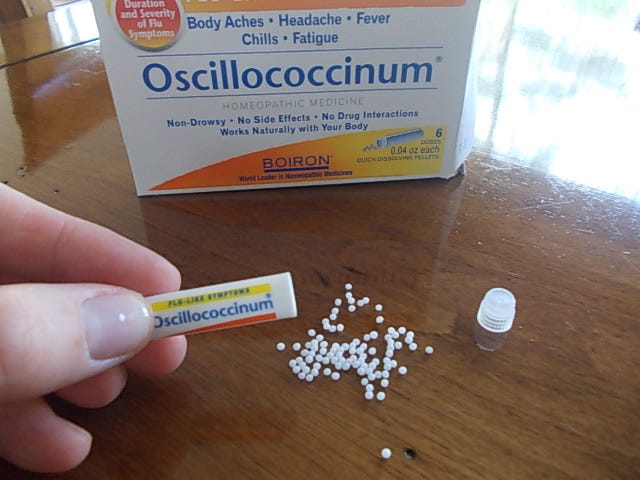

What is Homeopathy?
Homeopathy is a holistic system of medicine developed by German physician Samuel Hahnemann in the late 18th century. It follows the principle of "like cures like," suggesting that substances that cause symptoms in healthy individuals can treat similar symptoms in sick people when given in highly diluted forms. Homeopathy focuses on treating the whole person rather than just addressing specific symptoms.
Benefits of Homeopathy
- Treats the whole person rather than isolated symptoms
- Gentle, non-invasive approach with minimal side effects
- Safe for all ages, including infants, pregnant women, and elderly
- Can complement conventional medicine
- May address chronic conditions that haven't responded to other treatments
- Personalized treatment plans for individual needs
Common Homeopathic Remedies
-
 Arnica Montana: Used for bruising, trauma, and muscle soreness.
Arnica Montana: Used for bruising, trauma, and muscle soreness. -
Belladonna: For sudden, intense conditions with inflammation and fever.
-
 Calendula: Helps with wound healing and skin irritations.
Calendula: Helps with wound healing and skin irritations. -
Nux Vomica: Addresses digestive issues and stress-related symptoms.
-
Oscillococcinum: Popular for flu-like symptoms and early cold stages.
How Homeopathy Works
Homeopathy operates on several key principles:
- Law of Similars: The idea that "like cures like" – substances that cause symptoms in healthy people can treat similar symptoms in sick people.
- Minimum Dose: Remedies are highly diluted to reduce potential side effects while maintaining therapeutic benefits.
- Individualization: Treatments are tailored to each person's unique symptom pattern rather than just their diagnosis.
- Holistic Approach: Considers physical, mental, and emotional aspects when selecting appropriate remedies.
Using Homeopathy in Daily Life
- Keep a basic homeopathic kit for common ailments like minor injuries, colds, and digestive upset.
- Consult with a qualified homeopath for chronic or complex conditions.
- Take remedies away from food, drink, and strong odors for maximum effectiveness.
- Store remedies in a cool, dark place away from strong-smelling substances.
- Be patient – homeopathic treatments often work gradually to stimulate the body's natural healing response.
Safety and Professional Guidance
While homeopathic remedies are generally considered safe due to their high dilution, it's important to consult with a qualified homeopathic practitioner for serious or chronic conditions. Homeopathy works best when used as part of an integrated approach to healthcare. Always inform your healthcare providers about all treatments you're using, including homeopathic remedies.